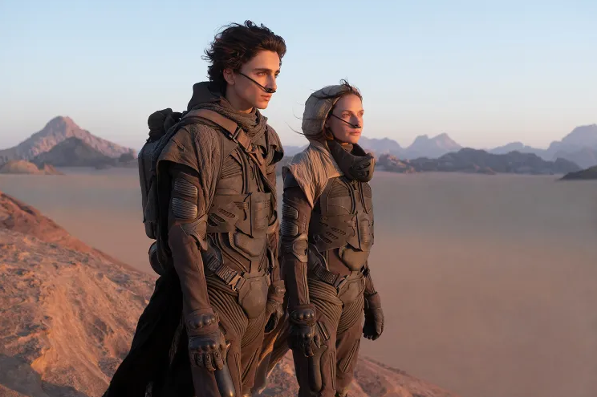
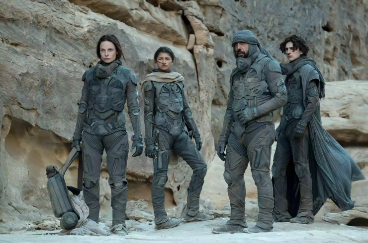

《沙丘3》将于2026年12月18日在英国上映，北美12月18日上映。而就在同一天，迪士尼/漫威的《复仇者联盟5》（Avengers: Doomsday）也计划同日登陆院线。这一天，被小罗伯特·唐尼称为 Dunesday，全网已经吵了快一年：谁会让步？答案是：谁都没让步。
这场票房大战谁输谁赢，或许要等圣诞档结束后才有答案。

这次的《沙丘3》改编自弗兰克·赫伯特的第二部小说《沙丘救世主》，时间设定在保罗·厄崔迪夺取帝国控制权将近二十年后。
此时的的保罗，不再是那个在沙丘上第一次戴上蒸馏服、眼神里有光的少年。现在的他，变成了自己曾经反对的独裁者。他清楚战争的残酷，却被时代推着制造杀戮。他看透所有未来，却找不到一条两全的出路。
很多科幻大片热衷于渲染救世主多么的所向披靡，而《沙丘》却恰恰相反：当一个普通人被捧上神坛，狂热的信仰本身，就会制造出新的灾难。
本片依旧是原班顶级班底坐镇：提莫西・查拉梅、赞达亚、弗洛伦斯・皮尤全员回归，以及奥斯卡得主哈维尔·巴登。编剧由维伦纽瓦与布莱恩·K·沃恩共同完成。影片时长约2小时20分钟。

这可能是2026年最不需要营销的一部电影，但它偏偏扔出了一记重磅。10月27日，《沙丘3》最终预告片上线，丹尼斯·维伦纽瓦的科幻三部曲，正式亮出了收官底牌。不是"第三章"，不是"新篇"，是终章。导演丹尼斯·维伦纽瓦早已确认：这是他沙丘三部曲的最后一部，拍完不再续拍。